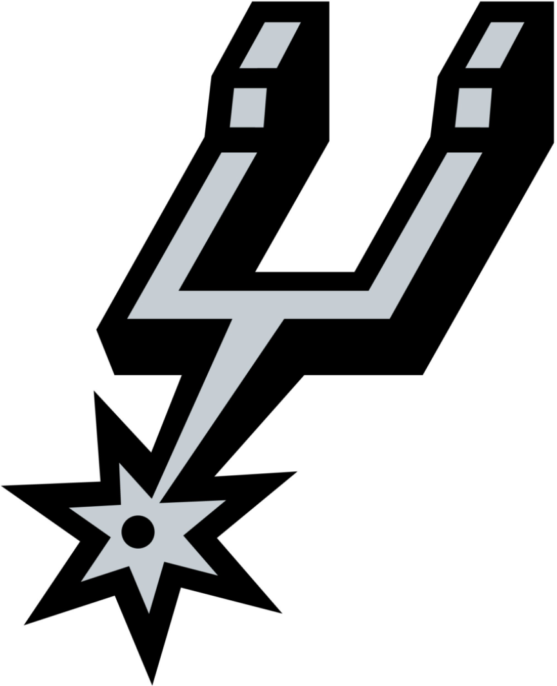
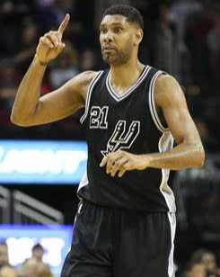
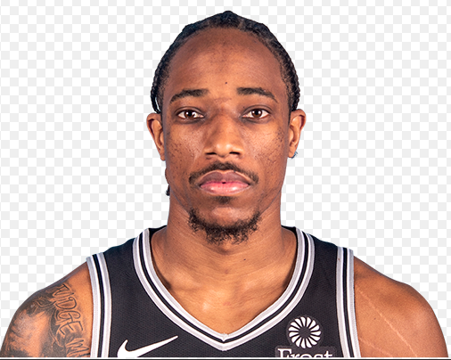

Spurs
The San Antonio Spurs are an American professional basketball team based in San Antonio. The Spurs compete in the National Basketball Association (NBA) as a member of the league's Western Conference Southwest Division. The team plays its home games at the AT&T Center in San Antonio. The Spurs are one of four former American Basketball Association (ABA) teams to remain intact in the NBA after the 1976 ABA–NBA merger and are the only former ABA team to have won an NBA championship. The franchise has won NBA championships in 1999, 2003, 2005, 2007, and 2014. As of the 2019–20 season, the Spurs had the highest winning percentage among active NBA franchises. As of May 2017, the Spurs had the best winning percentage of any franchise in the major professional sports leagues in the United States and Canada over the previous three decades. From 1999–2000 to 2016–17, the Spurs won 50 games each season, setting a record of 18 consecutive 50-win seasons. In the 2018–19 season, the Spurs matched an NBA record for most consecutive playoff appearances with 22. The team's recent success has coincided with the tenure of current head coach Gregg Popovich and with the playing careers of Spurs icons David Robinson (1989–2003) and Tim Duncan (1997–2016).
Timothy Theodore Duncan (born April 25, 1976) is an American former professional basketball player and coach. Nicknamed "the Big Fundamental", he is widely regarded as the greatest power forward of all time and as one of the greatest players in NBA history. He spent his entire 19-year playing career with the San Antonio Spurs.
Duncan started out as an aspiring swimmer and did not begin playing basketball until ninth grade when Hurricane Hugo destroyed the only available Olympic-sized pool in his homeland of Saint Croix, U.S. Virgin Islands. In high school, he played basketball for St. Dunstan's Episcopal. In college, Duncan played for the Wake Forest Demon Deacons, and in his senior year, he earned the John Wooden Award as well as Naismith College Player of the Year and USBWA College Player of the Year.
After graduating from college, Duncan went on to win NBA Rookie of the Year after being selected by San Antonio with the first overall pick in the 1997 NBA draft. He primarily played the power forward position and also played center throughout his career. He is a five-time NBA champion, a two-time NBA MVP, a three-time NBA Finals MVP, a 15-time NBA All-Star, and the only player to be selected to both the All-NBA and All-Defensive Teams for 13 consecutive seasons.
Off the court, Duncan created the Tim Duncan Foundation to raise health awareness and to fund education and youth sports programs.
DeMar Darnell DeRozan (born August 7, 1989) is an American professional basketball player for the San Antonio Spurs of the National Basketball Association (NBA). He played college basketball for the USC Trojans and was selected ninth overall by the Toronto Raptors in the 2009 NBA draft. He is a four-time NBA All-Star and a two-time All-NBA Team member. He spent nine seasons with the Raptors, including five playoff runs, before being traded to the Spurs in the summer of 2018. DeRozan has played for the United States national team in the 2014 World Cup and the 2016 Summer Olympics.